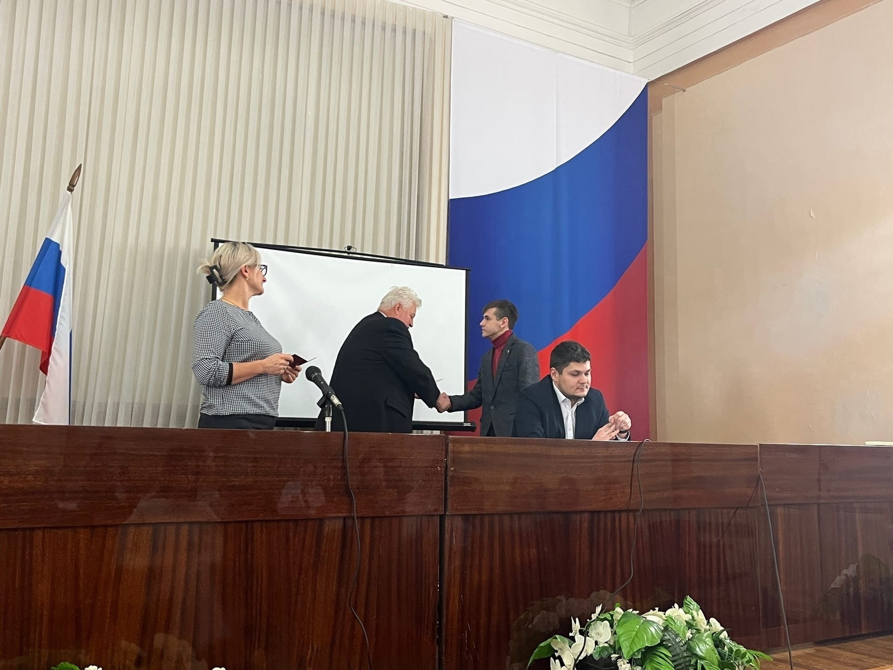

Выпускники 2020 года
Сегодня с нами: Данила Кочешков выпускник 2020 года. Данила являлся стипендиатом правительства РФ, постоянным участником различных конкурсов: чемпионата профессий и предпринимательских идей «Карьера в России», конкурс молодежных инновационных команд РОСТ-2018!!!
❗В годы учебы Данила в составе проектной группы «VideoRoll» Данила выполняет творческие проекты по созданию видео.
❗Высшее образование Данила получает в Арзамасском филиале Нижегородского государственного университета им. Н.И. Лобачевского Направление подготовки 44.03.01 «Педагогическое образование» направленность (профиль) программы бакалавриата: Информатика.
❗2020-2021 год работал в нашем колледже зав. лабораторией информационно- технического центра;
❗На сегодняшний день работает в Центре цифрового образования детей "IT-CUBE г. Арзамас", педагог дополнительного образования по направлениям - "Графический дизайн", "Медиа. Создание цифрового контента".
❗По совместительству руководитель арзамасской общественной организации на базе IT-CUBE, "Медиа волонтеры".
❗И еще, мы ПОЗДРАВЛЯЕМ Данилу с тем, что он получил членство в Молодежной палате Городской думе, там уже стал председателем постоянной комиссии по развитию образования.
